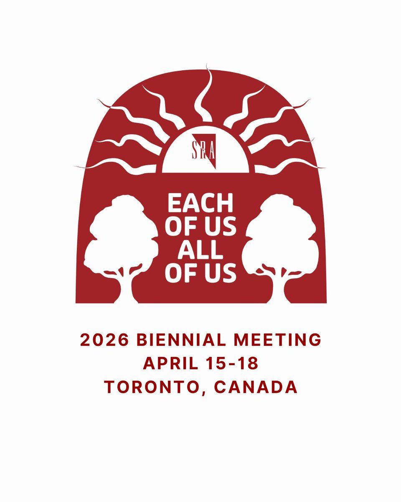
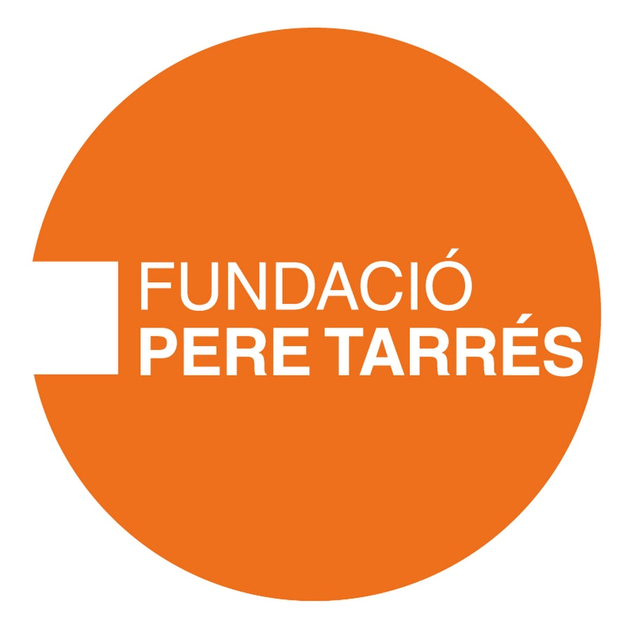
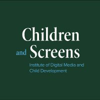

We zijn op zoek naar deelnemers!
We werven actief deelnemers van 16–21 jaar voor onze tweeweekse smartphonestudie over social media en emotioneel welzijn. Als u met jongeren werkt of iemand kent die in aanmerking komt, zijn scholen, klinieken en jongerenorganisaties van harte welkom contact op te nemen — elke deelnemer levert een waardevolle bijdrage.
Ons werk gepresenteerd op de SRA Biennial Meeting — Toronto, Canada
Luka Todorović presenteerde een poster over Studie I op de tweejaarlijkse bijeenkomst van de Society for Research on Adolescence — een van de toonaangevende internationale bijeenkomsten van adolescentieonderzoekers — en deelde vroege bevindingen uit ons focusgroeponderzoek met Nederlandse tieners. Helle Larsen woonde de conferentie bij en organiseerde een symposium.

Erasmus+-aanvraag ingediend met Europese partners
Het Digitale Jeugd Project sloot zich aan bij een consortium onder leiding van Fundació Pere Tarrés (Spanje) voor een Erasmus+ KA220-subsidieaanvraag van €250.000 — een belangrijke stap in het vertalen van DJP-onderzoek naar praktische tools voor digitaal welzijn van jongeren in onderwijs- en vrijetijdsomgevingen in Europa. We wachten op de beslissing in juli 2026.

Onderzoeksbeurs toegekend door Amsterdams Universiteitsfonds
Het Digitale Jeugd Project ontving een onderzoeksbeurs van €10.360 van het Amsterdams Universiteitsfonds ter ondersteuning van Studie V — een erkenning die de tweeweekse EMA-studie naar dagelijkse social mediadynamiek en emotioneel welzijn mogelijk maakt, en waarvoor we dankbaar zijn.
Studie III gepubliceerd in Addictive Behaviors
Onze laboratoriumstudie naar ADHD-symptomen en problematisch digitaal mediagebruik bij jongvolwassenen is nu gepubliceerd in Addictive Behaviors. Lees het hier →
Studie II gepubliceerd in Journal of Research on Adolescence
Onze tweejarige longitudinale studie met 645 Nederlandse adolescenten is nu beschikbaar als open access in het Journal of Research on Adolescence. Het artikel pakt een van de centrale debatten in het veld aan — wat komt eerst, emotionele problemen of problematisch gebruik — en stelt vast dat het antwoord sterk afhangt van wie je het vraagt. Lees het hier →
Poster en flash talk op Digital Media and Developing Minds Congress — Washington DC, VS
Bevindingen uit ons onderzoek naar geestelijke gezondheid en problematisch digitaal mediagebruik bij adolescenten werden gepresenteerd op dit internationale wetenschappelijk congres, dat enkele van de toonaangevende onderzoekers op het snijvlak van technologie en jeugdontwikkeling samenbrengt.
